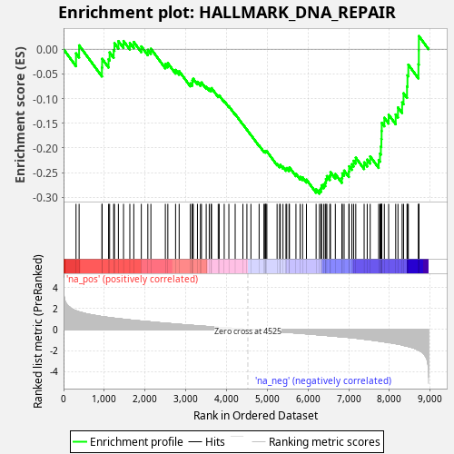
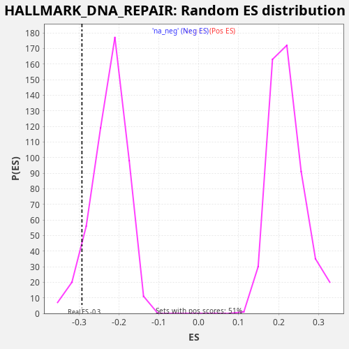

| Dataset | star_PE_rank_metric |
| Phenotype | NoPhenotypeAvailable |
| Upregulated in class | na_neg |
| GeneSet | HALLMARK_DNA_REPAIR |
| Enrichment Score (ES) | -0.29272008 |
| Normalized Enrichment Score (NES) | -1.3020092 |
| Nominal p-value | 0.07172131 |
| FDR q-value | 0.16521405 |
| FWER p-Value | 0.868 |

| SYMBOL | RANK IN GENE LIST | RANK METRIC SCORE | RUNNING ES | CORE ENRICHMENT | |
|---|---|---|---|---|---|
| 1 | ADA | 306 | 1.774 | -0.0084 | No |
| 2 | GTF2H5 | 382 | 1.678 | 0.0078 | No |
| 3 | POLR2G | 942 | 1.232 | -0.0371 | No |
| 4 | RAE1 | 947 | 1.230 | -0.0195 | No |
| 5 | USP11 | 1105 | 1.145 | -0.0203 | No |
| 6 | GTF2A2 | 1131 | 1.131 | -0.0065 | No |
| 7 | XPC | 1230 | 1.082 | -0.0017 | No |
| 8 | DDB1 | 1249 | 1.073 | 0.0121 | No |
| 9 | DGUOK | 1346 | 1.026 | 0.0164 | No |
| 10 | POLD3 | 1472 | 0.977 | 0.0166 | No |
| 11 | SNAPC5 | 1627 | 0.912 | 0.0127 | No |
| 12 | CMPK2 | 1724 | 0.868 | 0.0146 | No |
| 13 | GTF2B | 1909 | 0.803 | 0.0057 | No |
| 14 | NUDT21 | 2069 | 0.750 | -0.0012 | No |
| 15 | CCNO | 2144 | 0.723 | 0.0011 | No |
| 16 | POLA1 | 2499 | 0.601 | -0.0300 | No |
| 17 | CANT1 | 2560 | 0.582 | -0.0282 | No |
| 18 | POLR3GL | 2750 | 0.520 | -0.0419 | No |
| 19 | ARL6IP1 | 2838 | 0.494 | -0.0445 | No |
| 20 | COX17 | 3112 | 0.408 | -0.0693 | No |
| 21 | POLD4 | 3158 | 0.394 | -0.0685 | No |
| 22 | GTF2F1 | 3162 | 0.393 | -0.0631 | No |
| 23 | RFC2 | 3184 | 0.386 | -0.0598 | No |
| 24 | IMPDH2 | 3287 | 0.352 | -0.0661 | No |
| 25 | MRPL40 | 3361 | 0.332 | -0.0694 | No |
| 26 | PDE4B | 3386 | 0.327 | -0.0673 | No |
| 27 | DAD1 | 3502 | 0.295 | -0.0760 | No |
| 28 | AK1 | 3577 | 0.275 | -0.0803 | No |
| 29 | POLA2 | 3623 | 0.261 | -0.0815 | No |
| 30 | SMAD5 | 3633 | 0.258 | -0.0787 | No |
| 31 | RPA3 | 3797 | 0.213 | -0.0940 | No |
| 32 | UMPS | 3821 | 0.203 | -0.0936 | No |
| 33 | POLR2I | 3944 | 0.171 | -0.1048 | No |
| 34 | RPA2 | 4058 | 0.142 | -0.1155 | No |
| 35 | POLR2C | 4213 | 0.096 | -0.1315 | No |
| 36 | BCAP31 | 4403 | 0.040 | -0.1522 | No |
| 37 | NUDT9 | 4501 | 0.009 | -0.1630 | No |
| 38 | SURF1 | 4600 | -0.020 | -0.1738 | No |
| 39 | TYMS | 4801 | -0.083 | -0.1951 | No |
| 40 | GTF3C5 | 4919 | -0.113 | -0.2067 | No |
| 41 | PCNA | 4943 | -0.119 | -0.2075 | No |
| 42 | RFC4 | 4962 | -0.125 | -0.2077 | No |
| 43 | ITPA | 4968 | -0.127 | -0.2064 | No |
| 44 | TAF10 | 4991 | -0.132 | -0.2069 | No |
| 45 | POLL | 5242 | -0.200 | -0.2322 | No |
| 46 | RFC3 | 5306 | -0.215 | -0.2362 | No |
| 47 | SSRP1 | 5320 | -0.221 | -0.2344 | No |
| 48 | POLR2A | 5387 | -0.242 | -0.2383 | No |
| 49 | RALA | 5460 | -0.262 | -0.2425 | No |
| 50 | ERCC4 | 5479 | -0.268 | -0.2406 | No |
| 51 | GMPR2 | 5536 | -0.288 | -0.2427 | No |
| 52 | TARBP2 | 5546 | -0.290 | -0.2394 | No |
| 53 | SDCBP | 5705 | -0.333 | -0.2524 | No |
| 54 | TAF12 | 5808 | -0.362 | -0.2585 | No |
| 55 | FEN1 | 5867 | -0.380 | -0.2595 | No |
| 56 | ZWINT | 5963 | -0.411 | -0.2641 | No |
| 57 | CETN2 | 6200 | -0.488 | -0.2836 | No |
| 58 | DDB2 | 6282 | -0.509 | -0.2852 | Yes |
| 59 | VPS28 | 6320 | -0.519 | -0.2818 | Yes |
| 60 | MPG | 6334 | -0.522 | -0.2755 | Yes |
| 61 | EIF1B | 6389 | -0.544 | -0.2736 | Yes |
| 62 | CLP1 | 6426 | -0.557 | -0.2695 | Yes |
| 63 | UPF3B | 6441 | -0.560 | -0.2628 | Yes |
| 64 | SUPT5H | 6464 | -0.571 | -0.2569 | Yes |
| 65 | NCBP2 | 6537 | -0.598 | -0.2562 | Yes |
| 66 | GPX4 | 6553 | -0.603 | -0.2491 | Yes |
| 67 | ADCY6 | 6672 | -0.646 | -0.2529 | Yes |
| 68 | DCTN4 | 6832 | -0.696 | -0.2606 | Yes |
| 69 | POLR2F | 6843 | -0.699 | -0.2514 | Yes |
| 70 | SEC61A1 | 6888 | -0.713 | -0.2459 | Yes |
| 71 | RFC5 | 7004 | -0.756 | -0.2477 | Yes |
| 72 | NPR2 | 7011 | -0.759 | -0.2372 | Yes |
| 73 | TP53 | 7077 | -0.787 | -0.2330 | Yes |
| 74 | HCLS1 | 7121 | -0.801 | -0.2260 | Yes |
| 75 | REV3L | 7174 | -0.826 | -0.2198 | Yes |
| 76 | POLE4 | 7379 | -0.920 | -0.2292 | Yes |
| 77 | AK3 | 7455 | -0.954 | -0.2237 | Yes |
| 78 | POLD1 | 7528 | -0.991 | -0.2172 | Yes |
| 79 | NT5C | 7736 | -1.098 | -0.2244 | Yes |
| 80 | CSTF3 | 7769 | -1.116 | -0.2116 | Yes |
| 81 | LIG1 | 7790 | -1.129 | -0.1972 | Yes |
| 82 | POLR1D | 7802 | -1.133 | -0.1818 | Yes |
| 83 | POLH | 7808 | -1.137 | -0.1656 | Yes |
| 84 | EDF1 | 7812 | -1.138 | -0.1492 | Yes |
| 85 | ERCC3 | 7875 | -1.176 | -0.1389 | Yes |
| 86 | TK2 | 7981 | -1.232 | -0.1326 | Yes |
| 87 | SUPT4H1 | 8154 | -1.349 | -0.1322 | Yes |
| 88 | BRF2 | 8210 | -1.386 | -0.1180 | Yes |
| 89 | GUK1 | 8312 | -1.476 | -0.1077 | Yes |
| 90 | DGCR8 | 8347 | -1.513 | -0.0893 | Yes |
| 91 | SNAPC4 | 8432 | -1.589 | -0.0754 | Yes |
| 92 | POLB | 8443 | -1.598 | -0.0530 | Yes |
| 93 | CDA | 8464 | -1.617 | -0.0314 | Yes |
| 94 | TAF9 | 8712 | -1.950 | -0.0306 | Yes |
| 95 | BCAM | 8722 | -1.979 | -0.0025 | Yes |
| 96 | VPS37B | 8723 | -1.979 | 0.0266 | Yes |
